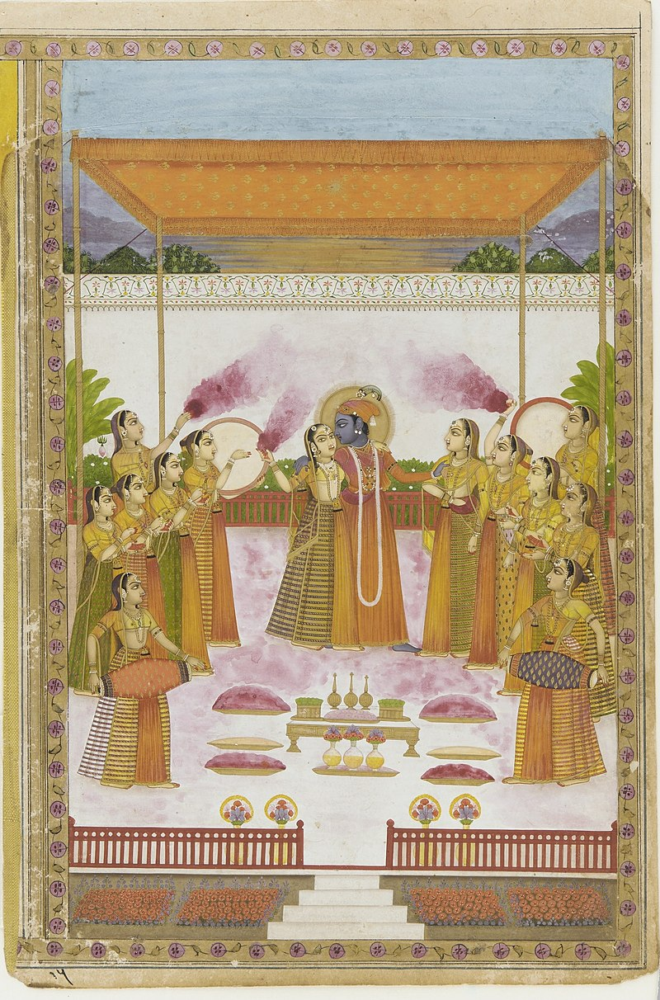

"Holli" redirects here. For the ice hockey player, see Antti Hölli. For other uses,
see Holi (disambiguation).
Holi (Hindi pronunciation: ['hoːli:]) is a popular and significant Hindu festival celebrated
as the Festival of Colours, Love, and Spring.[1][10][11][12] It celebrates the eternal and
divine love of the deities Radha and Krishna.[13][14] Additionally, the day signifies the
triumph of good over evil,[15][16] as it commemorates the victory of Vishnu as Narasimha
over Hiranyakashipu.[17][18] Holi originated and is predominantly celebrated in the Indian
subcontinent of India and Nepal, but has also spread to other regions of Asia and parts
of the Western world through the Indian diaspora.[11][19][20][21][22][23][24][25] Holi also celebrates the arrival of Spring in India and Nepal, the end of winter,
and the blossoming of love.[19][26] It is also an invocation for a good spring
harvest season.[19][26] It lasts for a night and a day, starting on the evening
of the Purnima (full moon day) falling on the Hindu calendar month of Phalguna,
which falls around the middle of March in the Gregorian calendar.
Holi also celebrates the arrival of Spring in India and Nepal,
the end of winter, and the blossoming of love.[19][26] It is also
an invocation for a good spring harvest season.[19][26] It lasts
for a night and a day, starting on the evening of the Purnima
(full moon day) falling on the Hindu calendar month of Phalguna
, which falls around the middle of March in the Gregorian calendar.
Names
Holi (Hindi: होली, Gujarati: હોળી, Kannada: ಹೋಳಿ, Marathi: होळी, Nepali: होली, Punjabi:
ਹੋਲੀ, Telugu: హోళి) is also known as Dol Jatra (swing festival") and Bôshonto Utshôb (Bengali: বসন্ত উৎসব)
("spring festival") in Bengal (West Bengal and Bangladesh), Phakua (Assamese: ফাকুৱা) and Dôl Jātrā
(Assamese: দ’ল যাত্ৰা) in Assam, Phāgu Pūrṇimā (Nepali: फागु पूर्णिमा) in the hilly region of Nepal, Dola
jātra (Odia: ଦୋଳଯାତ୍ରା) in Odisha, Fagua or Phagua (Bhojpuri: फगुआ) in eastern Uttar Pradesh,
western Bihar, and northeastern Jharkhand, Phagwah (Caribbean Hindustani: पगवा) in the
Caribbean (namely Trinidad and Tobago, Guyana, Suriname, and Jamaica), and Phagua
(Fiji Hindi: पगवा) in Fiji.
Other names of HoliThe main day of the celebration
is known as "Holi", "Rangwali Holi",
"Dol Purnima", "Dhuleti", "Dhulandi",[27] "Ukuli", "Manjal Kuli",[28] "Yaosang",
"Shigmo", "Phagwah", or "Jajiri".
Description
Holi is a sacred ancient tradition of Hindus, a holiday in many states of India and Nepal with regional holidays in other countries.
It is a cultural celebration that gives Hindus and non-Hindus alike an opportunity to have fun banter with other people by throwing coloured water and powder at each other.
It is also observed broadly on the Indian subcontinent. Holi is celebrated at the end of winter, on the last full moon day of the Hindu luni-solar calendar month, marking the spring, making the date vary with the lunar cycle.[note 1] The date falls typically in March, but sometimes late February of the Gregorian calendar.[34][35]
The festival has many purposes; most prominently, it celebrates the beginning of Spring.In 17th century literature, it was identified as a festival that celebrated agriculture, commemorated good spring harvests, and the fertile land.[19]
Hindus believe it is a time to enjoying spring's abundant colours and say farewell to winter. To many Hindus, Holi festivities mark an occasion to reset and renew ruptured relationships, end conflicts, and rid themselves of accumulated emotional impurities from the past.[26][36]
It also has a religious purpose, symbolically signified by the legend of Holika. The night before Holi, bonfires are lit in a ceremony known as Holika Dahan (burning of Holika) or Little Holi.
People gather near fires, sing and dance. The next day, Holi, also known as Dhuli in Sanskrit, or Dhulheti, Dhulandi or Dhulendi, is celebrated.[37]
In Northern parts of India, children and youth spray coloured powder solutions (gulal) at each other, laugh, and celebrate, while adults smear dry coloured powder (abir) on each other's faces.[5][36]
Visitors to homes are first teased with colours, then served with Holi delicacies (such as gujia, shakkarpaare, matri, and dahi-bada), desserts and drinks.[38][39][40] After playing with colours, and cleaning up, people bathe, put on clean clothes, and visit friends and family.[26]
Like Holika Dahan, Kama Dahanam is celebrated in some parts of India. The festival of colours in these parts is called
Rangapanchami, and occurs on the fifth day after Poornima (full moon).[41]

Krishna playing Holi with Radha and gopis
Observed by
Hindus,[1] Jains,[2][3] and others[4]
Type
Religious, cultural, spring festival
Significance
Victory of good over evil
Celebration of divine love of Radha Krishna
Arrival of Spring
Celebrations Night before Holi:
Holika Dahan or Kama DahanOn Holi: Playing with coloured powder and water, dancing, greetings, festival delicacies[5]
Date
Phalguna Purnima
2025 date
14 March in India[6]
24 March in Nepal (hilly region)
25 March in Nepal (terai region)[7][8] 24 March in Nepal[9]